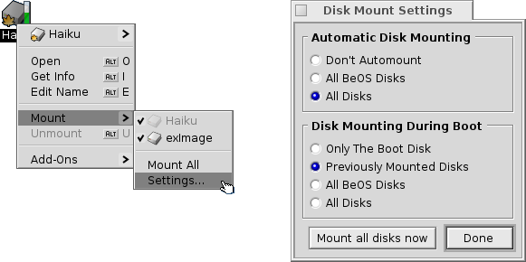
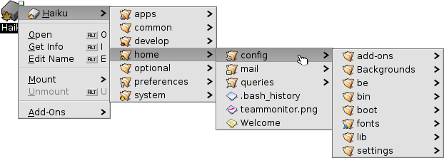
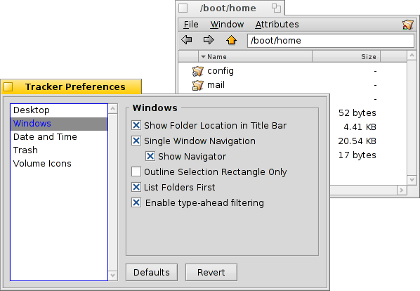

Українська
Українська Français
Français Deutsch
Deutsch Italiano
Italiano Русский
Русский Español
Español Svenska
Svenska 日本語
日本語 中文 ［中文］
中文 ［中文］ Português
Português Suomi
Suomi Slovenčina
Slovenčina Magyar
Magyar Português (Brazil)
Português (Brazil) English
English| Зміст |
|
Mounting volumes Navigating Appearance Tracker preferences Working with files Transaction status |
Tracker
The Tracker is the graphical interface to all your files. It lets you create new files and folders or find, launch or rename as well as copy or delete existing ones.
Being an application like any other (the Desktop with its icons is really just a fullscreen window in the background), Tracker appears with its windows in the Deskbar and can be quit and restarted. The easiest way to quit and restart a crashed or frozen Tracker (or a wayward Deskbar) is to call the Team Monitor.
 Mounting Volumes
Mounting Volumes
In order to access a harddisk, CD, USB stick etc., you first have to mount the volume, that is, let the system know it's there. This is done with a right-click on the Desktop or an already mounted volume (like the boot disk) and choosing the volume from the submenu. You find the same menu in the Deskbar.
There are also so you don't have to mount everything manually after every bootup.
The above settings will automatically mount any storage device you connect/insert and also mount all disks on bootup that were mounted previously.
Navigating
By default, when you double-click a folder, Tracker opens a new window while leaving the parent window open. This can quickly lead to an overcrowded desktop.
You can prevent that by holding down the OPT key, which automatically closes the parent window.
This is also true for keyboard navigation. For more on that, see topic Shortcuts and key combinations.
Moving through your folders is one of Trackers main purposes, just like the file managers on other platforms. Haiku's Tracker has some unique features that will help you doing that efficiently.
Drilling down the submenus
Instead of double-clicking your way down folder after folder, there's a better way to drill down:
Right-click onto a folder, and at the top of the usual context menu you'll find a submenu of the current folder that let's you navigate down a level. Just move down the hierarchy until you find the file or folder you're looking for and click on it to open it. The above shows the contents of the folder /boot/home/config/.
If you do the above while dragging a file with you, it will be moved to where you eventually drop it.
A similar method can be used from any Tracker window:

Click on the area in the lower left, where the number of items is listed, and you'll get submenus for every level above your current location. From there you can drill down through the folders as usual.
Note, that the Desktop is always the topmost level as that is where Tracker shows mounted volumes. So, if you want to go to another disk, you first have to navigate to the top (Desktop) and cross over to your other disk from there.
You'll get the same submenu-navigating when you drag a file over a folder. After a short while of hovering, a submenu pops up and you can drill down to your destination. If you initiated the drag with the right mousebutton, you can choose between copying, moving or linking the file when you release the mouse.
Jumping to files with type-ahead
You may be familiar with the concept from file managers of other operating systems: typing the first few letters of a filename will jump to the first file matching these starting characters. Haiku took the idea a step further. If there isn't a file starting with those letters it will jump to the first file including the string anywhere in its name. And if there's nothing with the string in its filename, the attributes are searched next.

In the above example, there are many files starting with "Haiku logo", rendering simpler approaches to typing ahead quite useless. In Haiku however, typing "web" jumps right to its first occurence in "Haiku logo - website". The characters you enter appear in the bottom left corner where you normally find the item count of all files in the folder. A second after entering a character, the display jumps back to normal and you're ready for a new type ahead search.
Type-ahead filtering
Instead of jumping to a file while typing, there's also the option to filter out all files not matching your type-ahead string. This can improve clarity dramatically, especially when dealing with crowded folders. By using SHIFT SPACE as delimiter, you can even filter on multiple strings.
Contrary to type-ahead jumping, the filtering will stick until you press ESC or close the window (or leave the folder if you're using Single Window Navigation).
This type-ahead filtering is set in the Tracker preferences.
Appearance

Tracker windows offer three different viewing modes from the menu:
(ALT 1) - Big icons, you can change the size from the submenu or in/decrease their size with ALT +/-.
(ALT 2) - Small icons.
(ALT 3) - A detailed list of your files enabling you to show/hide available attributes. (See topic Attributes.)
The menu offers a number of other functions:
(ALT Y) - Resizes the window to its ideal size.
- Only available in Icon or Mini icon view, a submenu allows to set the sorting order to various properties:
, , , , , , ,
- Inverts the sorting order
(ALT K) - Aligns all icons to an invisible grid. Hold down SHIFT and the menu becomes which additionally sorts all icons according to the above selected criterium.
(SHIFT ALT A) - Select files according to a regular expression.
(ALT W) - Closes the window. Hold down SHIFT and the menu becomes which closes every Tracker window.
(ALT Q) - Closes every Tracker window in the current workspace. A useful shortcut if you forgot to hold the OPT key while clicking through folders and all those still open Tracker windows clutter your workspace.
Sometimes you just want to rearrange a few icons without doing a complete (ALT K). In that case, you select these icons and start to drag them to their new location. Before you drop them there, keep ALT pressed. This will align the icons to the invisible grid.
The rest of the functions are pretty self-explanatory, leaving the Tracker preferences.
Tracker preferences
opens a panel that offers a number of settings that, where not obvious, should become clear once tried out. Since all settings are applied live, you'll immediately see the changes.
So, in short, the not so obvious settings:
- Decide if all mounted disks appear directly on the Desktop or in a window after clicking a single Disk icon sitting on the Desktop.
- You can set , i.e. a double-clicked folder doesn't open in its own window, but inside the already open window instead, replacing the view of it's parent folder. This is not the same as clicking while holding the OPT key, as described above, because you'll lose the per window saved position and size.
Before you switch Tracker to Single Window Navigation mode, because that may feel more familiar to you, we recommend giving the menu based browsing a try first, as that may actually work much faster for you after getting used to. On the other hand, single window browsing offers a Navigator where you can enter or copy & paste a path name and use back, forward and up buttons.
Activating will filter the contents of a Tracker window while you type to only display the files matching your string in their name or any currently displayed attribute. See above.
- Set the behavior when deleting a file.
- Set the color of an optional indicator of free space that's shown besides a disk's icon.
This panel, by the way, is also available as Tracker from Deskbar's .
Working with files
When invoked on a selected file, most of the menu commands are also offered in the context menu by right-clicking that file.
As usual the commands are pretty clear.
- Find a file or folder. See topic Query for more info.
- Create a new folder or any other file based on a template.

Choosing opens the folder /boot/home/config/settings/Tracker/Tracker New Templates. Creating a file in that folder will offer its filetype with the file's name and other attributes as template in the menu. Here, there's a file "Text" with the filetype text/plain. See topic Filetypes for more info.
- A submenu offers all applications that can handle this filetype.

The preferred application that would open the file when double-clicked, is checkmarked. This submenu lists first those applications that can handle the exact filetype, in this case it's a text file, the type text/plain. Next come all applications that can handle that supertype in general, here text/*. Last in the list are those that can deal with any file. If you don't click on an app in the submenu, but on the entry instead, a panel opens:

Here you'll again find the programs that were listed in the submenu. By selecting one and clicking the button, you changed the preferred application for every file of that filetype, here text/plain.
-

The panel presents info on the selected file and lets you set the default application and, after you expanded that part of the panel, permissions and owner. Clicking on the path will open it in a Tracker window.
, and - lets you rename or duplicate a file or put the selected file(s) to the trash.
, and - lets you move, copy or link the selected file(s) using the submenu navigating method. Holding SHIFT while invoking the menu offers the option to create a relative link.
, and - lets you cut, copy and paste files using the clipboard. By holding SHIFT while invoking the menu you can files, maybe from another folder that you can paste somewhere else later. Also, while holding SHIFT you can paste the copied files in the clipboard as links.
- will sniff out and set the type of files if they didn't have one before, e.g. if you transferred a file with wget which doesn't set a filetype itself. Holding SHIFT while invoking the menu changes the item to which identifies the filetype and corrects it if it was false before.
- offers you every generic Tracker add-on and those that can handle the selected file(s). See topic Tracker Add-ons for more information.
Transaction status
When you copy, move or delete files, Tracker shows its progress with a status window. If you initiate more than one transaction, each job gets its own status display.

To the right are two buttons to pause or stop a transaction entirely. Sometimes it can be useful to temporarily pause a large transaction. For example, you may need to quickly launch a large application. Copying large amounts of data chokes your harddisk's IO bandwidth and thus delays your workflow.